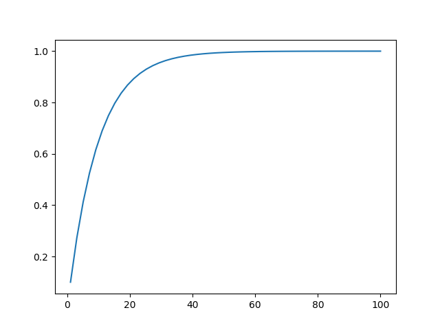

- Alright I am tired of reading this one page, I just created a part 2 so I'm not exhausted reading one page.
- Here I am going to start figuring out the formula for the first part
- First part: Calculate probability of losing the martingale
- To create asymettry, I am going to say that the chance I win is 40%. The chance I lose is 60%.
- If I bet for one dollar, I will have a 40% chance of winning a dollar, thereby ending the bet. I call it Pw
- If I have the same bet, and I win, 60% chance of losing, thereby making me double the bet next time, I call it Pl
- Now, in this case I have three numbers: 40% and 1 dollar and 1 dollar. In this case, I am risking 1 dollar, to gain 1 dollar, I have a 40% chance to win.
- This can be (Pw, Dr, Dg). Probability winning, dollars risked, and dollars gained.
- If, however, I increase my risk to 2 dollars, I effectively increase my probability of winning.
- THe probability of winning = 100% - the probability of losing
- The probability of winning = 100% - (60%)^2
- The probability of winning = 100% - 36%
- Probability winning = 64%
- Now my numbers are (64%, 2, 1)
- If we do it again, we get (78%, 4, 1)
- Let's make a formula. Let's call it Pw = 1 - (60%)^(log2(Dr)+1)
- But where does the dollars gained go into this process? I have only assumed that the game "ends" when I gain one dollar. In order to win multiple dollars, I must repeat the process
- Pw = (1 - (60%)^(log2(Dr)+1)^Dg
- Going to make a python script with that equation
PythonScript - Let's plot this! But how do we choose to graph it? I don't currently know how to plot in 3D, so I will have the dollars_risked stay constant. Let's keep it at 128

- So now we have our graph. It looks like if we want an 80% chance of winning, we will win a little less than 20 dollars, which makes sense in terms of expected value. The percentage that you are certain is balanced out by how little you actually gain.
- So this is the reality, but what is my expectation?? I know that I personally like to risk a little more if it can spell better amount, but when does it start decreasing??
- In my mind I think of something like this:
